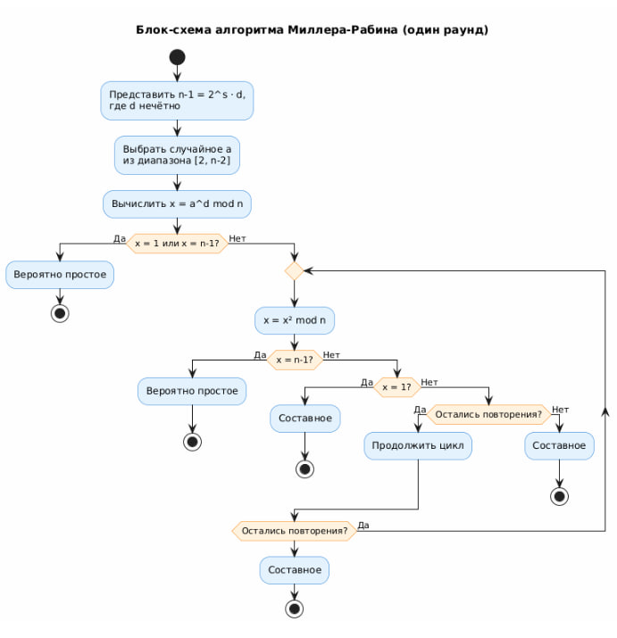
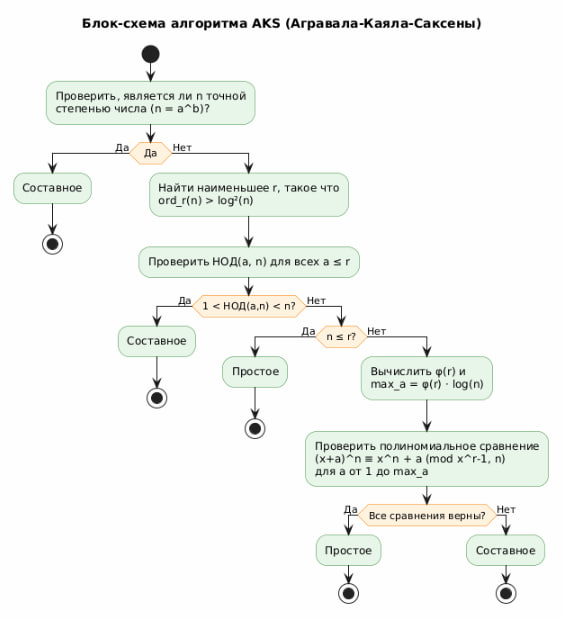
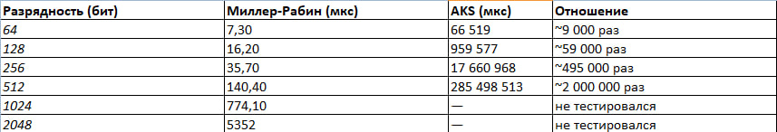

Введение
Проблема проверки чисел на простоту является одной из фундаментальных задач вычислительной теории чисел. Простые числа играют ключевую роль в криптографии, включая алгоритмы RSA и протоколы TLS/SSL.
Цель работы: провести сравнительный анализ алгоритмов Миллера-Рабина и AKS, реализованных на языке C++.
Алгоритм Миллера-Рабина
Тест Миллера-Рабина - вероятностный алгоритм проверки числа на простоту. Ниже представлена блок-схема алгоритма:

Характеристики алгоритма
- Тип: вероятностный алгоритм
- Сложность: O(k · log³n), где k - число раундов
- Вероятность ошибки: не более 4^(-k)
- Применение: криптография, генерация ключей RSA
Алгоритм AKS
Алгоритм AKS (Агравала-Каяла-Саксены) - первый детерминированный алгоритм проверки простоты с полиномиальной сложностью, не зависящий от гипотез. Ниже представлена блок-схема алгоритма:

Характеристики алгоритма
- Тип: детерминированный алгоритм
- Сложность: O(log⁶n)
- Точность: 100% (без вероятности ошибки)
- Год открытия: 2002 (Agrawal-Kayal-Saxena)
Результаты эксперимента
Эксперимент проводился на числах различной разрядности: от 64 до 2048 бит. Ниже приведено среднее время выполнения алгоритмов (в микросекундах):

Основные выводы
- Производительность: Миллер-Рабин значительно быстрее AKS. Для 512-битных чисел разница достигает 2 миллионов раз!
- Масштабируемость: При удвоении разрядности время работы Миллера-Рабина увеличивается в 3-4 раза, а AKS - в 16 раз.
-
Практическая применимость:
- Миллер-Рабин идеален для криптографии (проверка 2048-битного числа за ~5 мс)
- AKS применим только для чисел малой разрядности (до 128 бит)
- Точность: При 40 раундах тестирования вероятность ошибки Миллера-Рабина не превышает 2^(-80), что криптографически эквивалентно нулю.